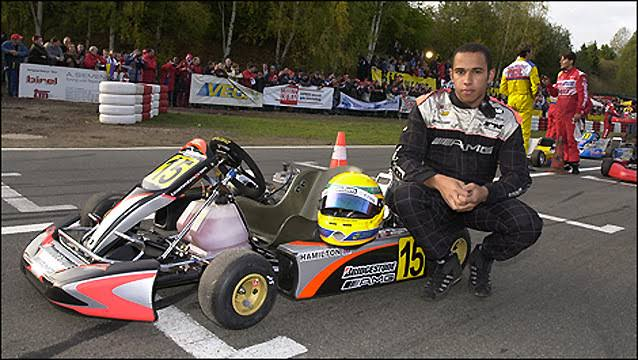

L'enfance et les débuts de Lewis Hamilton
Lewis Carl Davidson Hamilton est né le 7 janvier 1985 à Stevenage, dans le comté de Hertfordshire en Angleterre. Son père Anthony, d'origine grenadienne, et sa mère Carmen, d'origine britannique, divorcent lorsqu'il a deux ans. Il grandit d'abord avec sa mère et ses demi-sœurs, puis s'installe chez son père à l'âge de 12 ans avec sa belle-mère Linda et son demi-frère Nicolas.
La passion de la course dès le plus jeune âge
Son attrait pour le pilotage commence dès 1991, lorsque son père lui offre sa première voiture télécommandée. Il termine deuxième du championnat britannique BRCA face à des adultes. Impressionné par son habilité et sa concentration, son père lui offre son tout premier kart d'occasion pour Noël à l'âge de 6 ans, en lui promettant de soutenir sa carrière tant qu'il travaillerait dur à l'école.

Les premiers succès en Karting (1993 - 2000)
À 8 ans, il commence la compétition officielle au Rye House Kart Circuit. Très vite, son style de pilotage agressif et précis fait des merveilles. Il enchaîne les victoires et remporte le championnat britannique Cadet en 1995.
C'est cette même année, lors de la cérémonie des Autosport Awards, que le jeune Lewis, âgé de 10 ans et vêtu d'un costume d'emprunt, s'approche de Ron Dennis, le directeur général de l'écurie McLaren. Il lui demande un autographe et lui dit : « Bonjour, je m'appelle Lewis Hamilton, j'ai gagné le championnat britannique et un jour je veux piloter vos voitures. » Ron Dennis inscrit alors dans son carnet : « Rappelle-moi dans neuf ans, on verra ce qu'on peut faire. »
L'intégration chez McLaren et les formules de promotion
En 1998, après un nouveau titre en catégorie Junior, Ron Dennis recontacte la famille Hamilton et fait signer à Lewis un contrat d'intégration dans le programme de jeunes pilotes McLaren. C'est la première fois qu'une écurie de Formule 1 s'engage auprès d'un pilote aussi jeune.
Grâce au soutien financier de McLaren et de Mercedes-Benz, Hamilton poursuit son ascension fulgurante :
- 2000 : Champion d'Europe de Karting (Formula A) à 15 ans avec 100 % de victoires lors de la phase finale.
- 2003 : Champion de Formula Renault UK avec 10 victoires en 15 courses.
- 2005 : Champion de Formula 3 Euro Series avec 15 victoires sur 20 courses.
- 2006 : Champion dès sa première saison en GP2 Series, ce qui lui ouvre directement les portes de la Formule 1 chez McLaren pour la saison 2007.